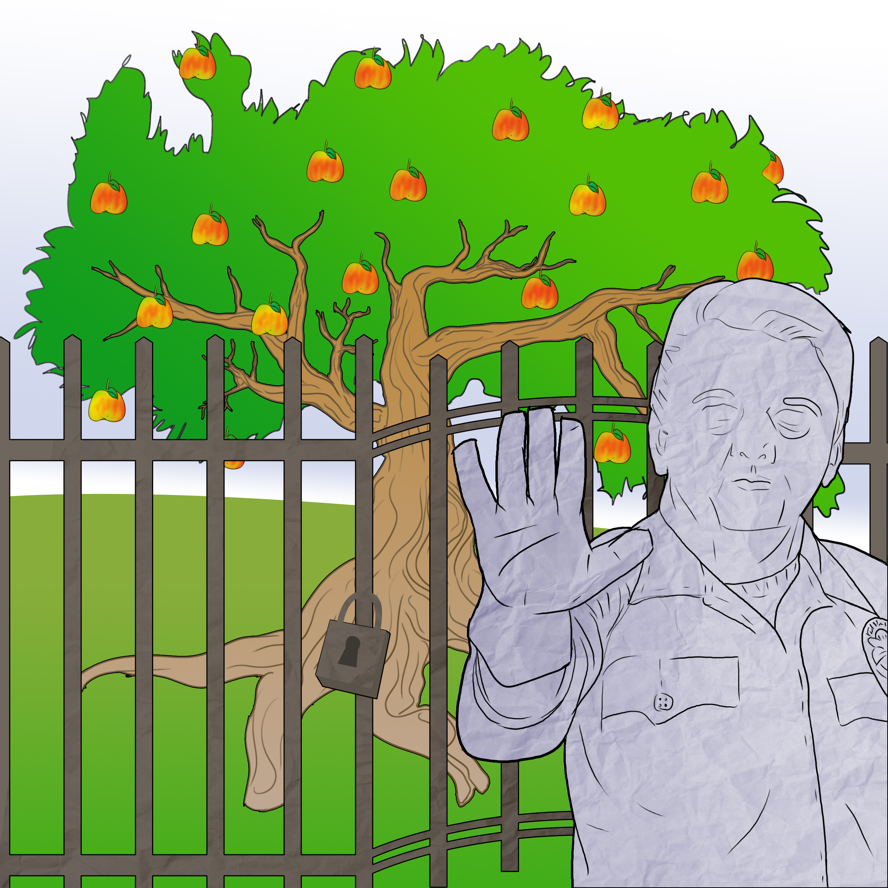
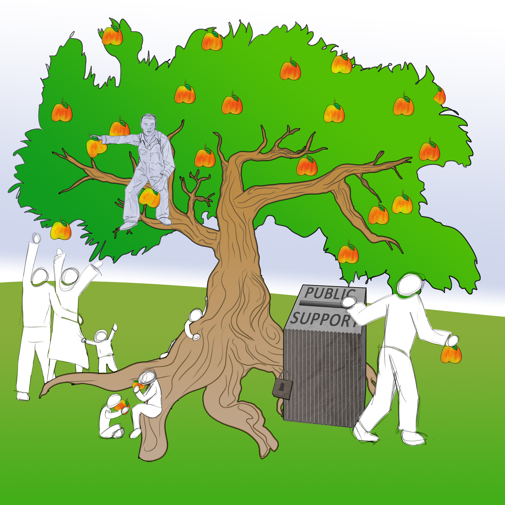

 |
 |
This vision is inspired by The Future of Science panel hosted by the MCB 15 course, taught by Prof. John Matsui, addressing the public understanding of science.
Our three panelists were Robert Full, professor of Integrative Biology, Eva Harris, professor from Division of Infectious Diseases and Vaccinology, and David Jay, the CEO of Journal Lab, a revolutionary online discussion platform for scientists to interact with primary source publications from PubMed (a major search engine for peer-reviewed scientific literature). Each panelist shared unique perspectives that, together, corroborated a similar revolutionary vision of the future of science and education. We will address some benefits and limitations of this vision as it unfolded in the discussion, and we will then suggest some themes in order to spur the proper courses of action. The readers of this article are encouraged to collectively contribute their own ideas as well.
Before diving into a rabbit hole, the mode this information is being conveyed is certainly not an example for the way we envision how ideas will be conveyed as the future discussed here unfolds. We hope our writing and discussions that arise from it will contribute to this transformation.
Ideally, readers of this article (yes, you) will provide feedback on this model using the current format available. It is a blog, comment. Comment on comments. Early developmental stages are a time for exploring the possibilities, so thought exercises are interspersed in the article. Think and talk about it. If you think of simple answers to some of these complex issues, please share. If everyone shines the flashlight of his/her perspective on this issue, we will have a better idea of problems and solutions to anticipate once inside the rabbit hole.
- If information exists freely but you do not know it or how to look for it, is it still accessible? If it is in another language or full of jargon, is it still accessible?
- How has access changed over time (e.g. with increasing literacy)?
- How has our perception of access changed with the advancement of technology? Does this relate to our concept of property?
- If something can be replicated and shared at little to no cost (e.g. file sharing), is it still property of someone, to which only select few (i.e. paying customers) can have access?